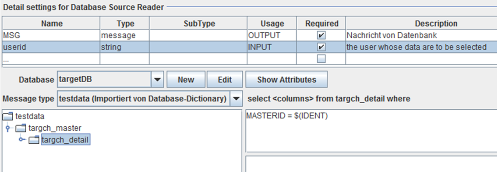
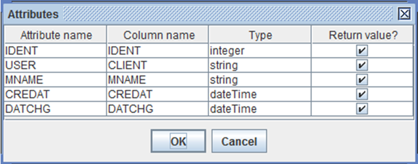
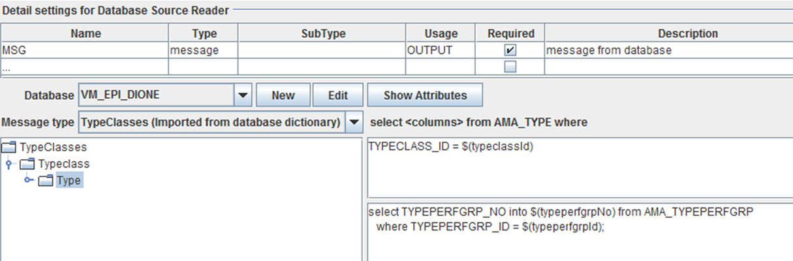

Database Source Reader

Topic content
Description
This channel is an extension to the Database Reader
Purpose of object
A database source reader is used to read hierarchical structured data from the database.
Creation
To create a Database Source Reader follow the steps described in the general description of Channels
Configuration
The dialog to configure the Database Source Reader looks like:
Base view of the channel database source reader
The following describes properties in database source reader.
Detail setting for Database Source Reader: Choose an appropriate environment entry or create a new one.
Database: Choose an appropriate message type here, if it is needed
Message type: Add new data types by inserting them here.
Step by step
1. You must import a message type from the database. The message type resemble the structure of one or more related database tables.
2. Then, you can select that message type in the database source reader.

3. Channel-Parameters are referenced by the notation $(/<parametername>).
4. In the example the parameter userid is referenced by $(/userid).
5. You might ask what means the name CLIENT in this expression. In the message itself we have only an attribute user.
If you click on the button "Show attributes", you see that in my example the attribute user actually references column named CLIENT.

In most cases attribute name and column name are the same, but you should know, that in where conditions you have to use the column name, not the attribute name.
Here you see how you can set an additional select statement to set values in the result message coming from a lookup table.

The following is a script language would be use in the channel source reader.
Syntax:
statement ::= assignment | select_statement
select_statement ::= "select" selectlist "into" varlist "from" rest_of_sql_selection ";"
assignment ::= "$(" [ "/" ] name ")" "=" expression ";"
varlist ::= "$(" name ")" [ "," varlist ]
expression ::= literal | variableRef | function_call
literal ::= string | number | "null" | "true" | "false" | "NULL" | "TRUE" | "FALSE"
string ::= "'" characters "'"
number ::= [ "-" ] digits [ "." digits ]
variableRef ::= "$(" name ")" | "$(/" name ")" | "$(" levels name ")"
levels = "../" [ levels ]
function_call ::= function_name "(" parameters ")"
parameters ::= expression [ "," parameters ]
Explanation:
A select statement might look like:
select userid, username into $(userid), $(name) from users where department = $(department);
$(/name) is a global variable while $(name) is local to the current context.
For every column x in the current table there is a local variable $(x).
You can reference variables or column values in upper contexts using the syntax $(../varname) or $(../../varname) and so on.
Within a string literal the single quote is denoted by \'.
You also can use the sequences \n, \r, \t, \f, \\ to denote linefeed, carriage return, tab, formfeed and the backslash.
You also can use hexadecimal values like \xC0, or \uC0A1.
The literal values for null and the boolean values true and false are case insensitive, so you can also write NULL, TRUE and FALSE.
Functions:
The following functions are defined so far:
string trim(string str)
string toLowerCase(string str)
string toUpperCase(string str)
string substring(string str, int startIndex, int length?) here the third argument (length) is optional.